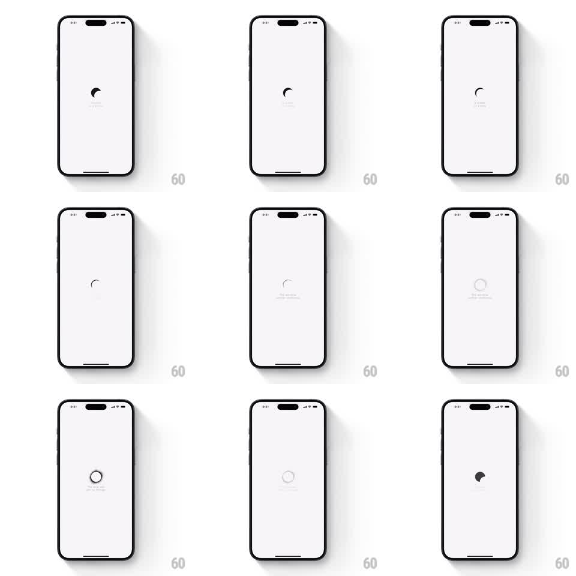

Media
Frame-by-frame

Rebuild this animation 1:1: Co-Star's loading screen - a tiny moon cycles through its phases at the center of an empty white screen while a line of poetic text fades in and out beneath it.

Rebuild this animation 1:1: Co-Star's loading screen - a tiny moon cycles through its phases at the center of an empty white screen while a line of poetic text fades in and out beneath it. ## Integration Integration: stack-agnostic spec - springs given as stiffness/damping, timed motions as duration + curve; map every value to your framework and animation library of choice. ## Scene Plain off-white screen. Center: a small moon glyph. Below it: one short poetic loading line in muted gray. ## Motion spec Pattern: moon-phase cycle, ~3s loop. - The moon morphs continuously through its phases - crescent -> half -> full outline -> dark disk and back (one full cycle ~2.5s, smooth path morph, no frame swapping). - The text line fades in (400ms), holds (~1s), fades out (400ms), and the next line takes its place. - Nothing else moves; the emptiness is the design. ## Calibration - Slow. The whole cycle should feel closer to breathing than to spinning. - The moon stays small (~24pt); scaling it up turns meditation into a spinner. ## Reduced motion Static full-moon glyph with the text lines crossfading. ## Don't miss - The morph is a continuous shape change, not a slideshow of phase icons. - Text never overlaps the moon's rhythm awkwardly - each line gets a full hold before rotating.